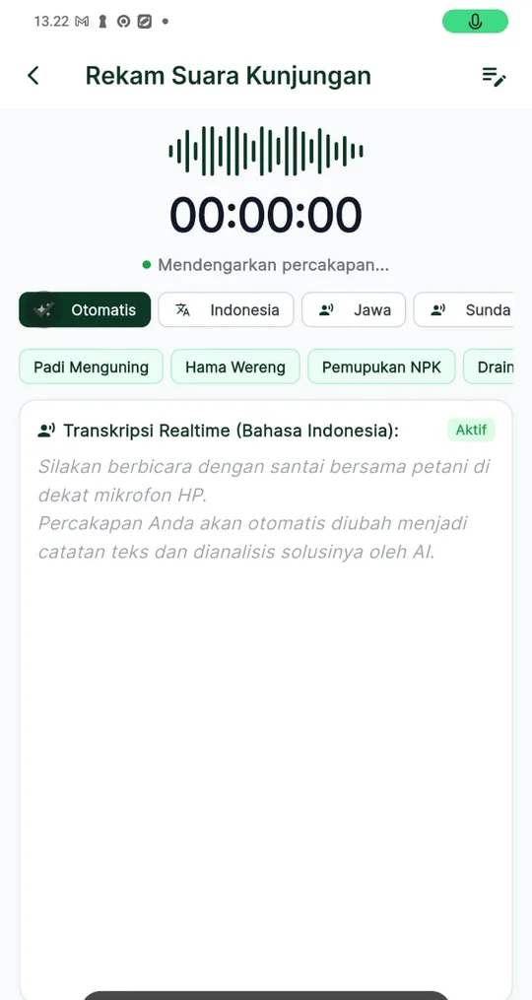
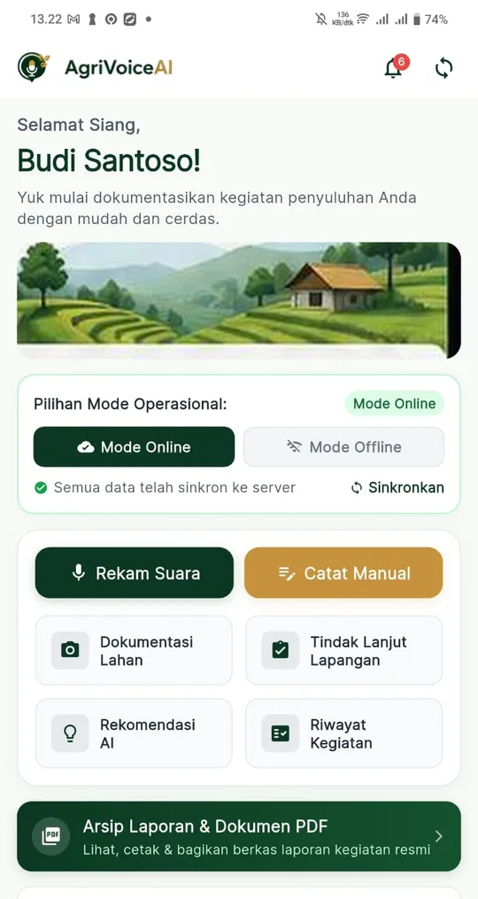
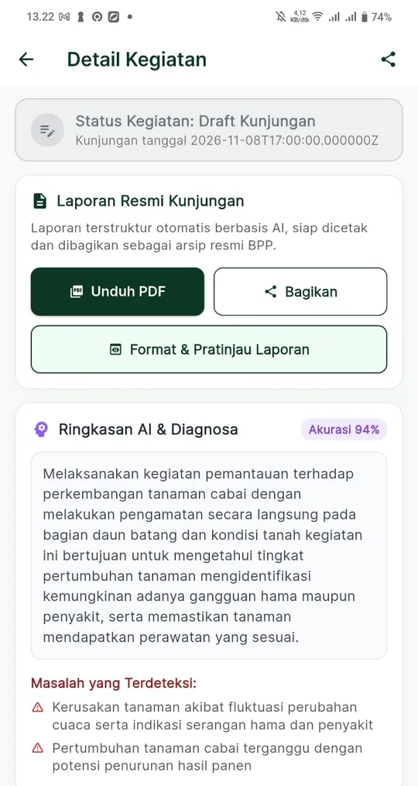

Laporan penyuluhan pertanian, cukup dengan berbicara.
AgriVoice AI membantu penyuluh pertanian lapangan mengubah obrolan dengan petani menjadi laporan kunjungan yang rapi, lengkap dengan bukti foto, lokasi, dan rekaman.
Cukup bicara, data kunjungan terisi.
Saat penyuluh berbincang dengan petani, AgriVoice AI mengenali isi percakapan dan mengisi data kunjungan. Penyuluh tinggal memeriksa dan mengoreksi.
Lihat cara kerja“Cabai saya umur 35 hari, daunnya keriting, kira-kira setengah hektar.”
- KomoditasCabai
- Umur tanaman35 hari
- GejalaDaun keriting
- Luas lahan0,5 ha
Contoh ilustrasi. Data tersimpan setelah diperiksa penyuluh.

Mencatat kunjungan penyuluh dengan lebih cepat.
AgriVoice AI adalah aplikasi Android dan dasbor web yang membantu Penyuluh Pertanian Lapangan (PPL) mencatat kunjungan ke petani. Penyuluh cukup berdialog seperti biasa dengan petani, lalu aplikasi merekamnya dan mengubahnya menjadi teks serta data laporan.
- Foto, lokasi GPS, dan waktu tercatat otomatis
- Tetap berjalan tanpa internet, data terkirim saat sinyal kembali
- AI memberi saran sesuai pedoman PHT, penyuluh yang memutuskan
Mulai dari mana?
Setiap topik punya halamannya sendiri.
- TentangLatar belakang, tujuan, dan manfaat bagi penyuluh dan pimpinan.
- Cara KerjaLima langkah dari rekam dialog sampai laporan disahkan.
- FiturVoice-to-report, foto GPS, diagnosis AI, offline-first, dashboard.
- BeritaPenjelasan fitur, pembaruan aplikasi, dan kegiatan di lapangan.
- Materi PromosiPoster, brosur, tangkapan layar, dan video untuk dibagikan.
- KontakHubungi tim AgriVoice AI lewat WhatsApp atau email.
Seperti inilah aplikasinya.
Tiga layar yang paling sering dipakai penyuluh di lapangan.



Tampilan prototipe dengan data contoh.
Ikuti kabar terbaru AgriVoice AI.
Baca berita, unduh materi promosi, atau hubungi kami untuk informasi lebih lanjut.